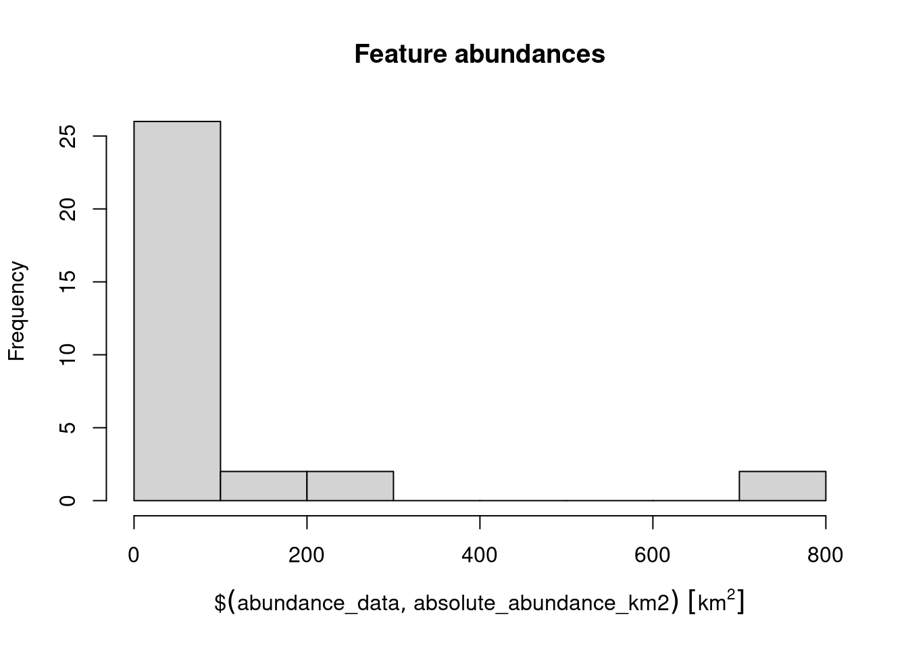

Chapter 4 Gap analysis
4.1 Introduction
Before we begin to prioritize areas for protected area establishment, we should first understand how well existing protected areas are conserving our biodiversity features (i.e. native vegetation classes in Tasmania, Australia). This step is critical: we cannot develop plans to improve conservation of biodiversity if we don’t understand how well existing policies are currently conserving biodiversity! To achieve this, we can perform a “gap analysis”. A gap analysis involves calculating how well each of our biodiversity features (i.e. vegetation classes in this exercise) are represented (covered) by protected areas. Next, we compare current representation by protected areas of each feature (e.g. 5% of their spatial distribution covered by protected areas) to a target threshold (e.g. 20% of their spatial distribution covered by protected areas). This target threshold denotes the minimum amount (e.g. minimum proportion of spatial distribution) that we need of each feature to be represented in the protected area system. Ideally, targets should be based on an estimate of how much area or habitat is needed for ecosystem function or species persistence. In practice, targets are generally set using simple rules of thumb (e.g. 10% or 20%), policy (17%; https://www.cbd.int/sp/targets/rationale/target-11) or standard practices (e.g. setting targets for species based on geographic range size) (Butchart et al. 2015; Rodrigues et al. 2004).
4.2 Feature abundance
Now we will perform some preliminary calculations to explore the data. First, we will calculate how much of each vegetation feature occurs inside each planning unit (i.e. the abundance of the features). To achieve this, we will use the problem function to create an empty conservation planning problem that only contains the planning unit and biodiversity data. We will then use the feature_abundances function to calculate the total amount of each feature in each planning unit.
# create prioritizr problem with only the data
p0 <- problem(pu_data, veg_data, cost_column = "cost")
# print empty problem,
# we can see that only the cost and feature data are defined
print(p0)## A conservation problem (<ConservationProblem>)
## ├•data
## │├•features: "vegetation_1", "vegetation_2", "vegetation_3", "vegetation_4" , … (32 total)
## │└•planning units:
## │ ├•data: <sfdata.frame> (516 total)
## │ ├•costs: continuous values (between 3.5972 and 47.2383)
## │ ├•extent: 348703.1831, 5167774.5993, 611932.4474, 5344516.4109 (xmin, ymin, xmax, ymax)
## │ └•CRS: WGS 84 / UTM zone 55S
## ├•formulation
## │├•objective: none specified
## │├•penalties: none specified
## │├•targets: none specified
## │├•constraints: none specified
## │└•decisions: binary decision
## └•optimization
## ├•portfolio: shuffle portfolio (`number_solutions` = 1, …)
## └•solver: highs solver (`gap` = 0.1, `time_limit` = 2147483647, …)
## # ℹ Use `summary(...)` to see complete formulation.# calculate amount of each feature in each planning unit
abundance_data <- feature_abundances(p0)
# print abundance data
print(abundance_data)## # A tibble: 32 × 3
## feature absolute_abundance relative_abundance
## <chr> <dbl> <dbl>
## 1 vegetation_1 16.0 1
## 2 vegetation_2 14.3 1
## 3 vegetation_3 10.4 1
## 4 vegetation_4 17.8 1
## 5 vegetation_5 13.0 1
## 6 vegetation_6 14.3 1
## 7 vegetation_7 20.0 1
## 8 vegetation_8 14.0 1
## 9 vegetation_9 18.0 1
## 10 vegetation_10 20.0 1
## # ℹ 22 more rows# note that only the first ten rows are printed,
# this is because the abundance_data object is a tibble (i.e. tbl_df) object
# and not a standard data.frame object
print(class(abundance_data))## [1] "tbl_df" "tbl" "data.frame"# we can print all of the rows in abundance_data like this
print(abundance_data, n = Inf)## # A tibble: 32 × 3
## feature absolute_abundance relative_abundance
## <chr> <dbl> <dbl>
## 1 vegetation_1 16.0 1
## 2 vegetation_2 14.3 1
## 3 vegetation_3 10.4 1
## 4 vegetation_4 17.8 1
## 5 vegetation_5 13.0 1
## 6 vegetation_6 14.3 1
## 7 vegetation_7 20.0 1
## 8 vegetation_8 14.0 1
## 9 vegetation_9 18.0 1
## 10 vegetation_10 20.0 1
## # ℹ 22 more rowsThe abundance_data object contains three columns. The feature column contains the name of each feature (derived from names(veg_data)), the absolute_abundance column contains the total amount of each feature in all the planning units, and the relative_abundance column contains the total amount of each feature in the planning units expressed as a proportion of the total amount in the underlying raster data. Since all the raster cells containing vegetation overlap with the planning units, all of the values in the relative_abundance column are equal to one (meaning 100%)—except for the 61st feature which has a value on NaN because it does not occur in the study area at all (i.e. all of its raster values are zeros). Now let’s add a new column with the feature abundances expressed in area units (i.e. km2).
# add new column with feature abundances in km^2
abundance_data$absolute_abundance_km2 <-
(abundance_data$absolute_abundance * prod(res(veg_data))) %>%
set_units(m^2) %>%
set_units(km^2)
# print abundance data
print(abundance_data)## # A tibble: 32 × 4
## feature absolute_abundance relative_abundance absolute_abundance_km2
## <chr> <dbl> <dbl> [km^2]
## 1 vegetation_1 16.0 1 15.8
## 2 vegetation_2 14.3 1 14.1
## 3 vegetation_3 10.4 1 10.2
## 4 vegetation_4 17.8 1 17.6
## 5 vegetation_5 13.0 1 12.8
## 6 vegetation_6 14.3 1 14.1
## 7 vegetation_7 20.0 1 19.7
## 8 vegetation_8 14.0 1 13.9
## 9 vegetation_9 18.0 1 17.8
## 10 vegetation_10 20.0 1 19.7
## # ℹ 22 more rowsNow let’s explore the abundance data.
# calculate the average abundance of the features
mean(abundance_data$absolute_abundance_km2)## 86.82948 [km^2]# plot histogram of the features' abundances
hist(abundance_data$absolute_abundance_km2, main = "Feature abundances")
# find the abundance of the feature with the largest abundance
max(abundance_data$absolute_abundance_km2)## 737.982 [km^2]# find the name of the feature with the largest abundance
abundance_data$feature[which.max(abundance_data$absolute_abundance_km2)]## [1] "vegetation_12"Now, try to answer the following questions.
- What is the median abundance of the features (hint:
median)? - What is the abundance of the feature with smallest abundance?
- What is the name of the feature with smallest abundance?
- What is the total abundance of all features in the planning units summed together?
- How many features have a total abundance greater than 100 km^2 (hint:
sum(abundance_values > set_units(threshold_value, km^2))?
4.3 Feature representation by protected areas
After calculating the total amount of each feature in the planning units (i.e. the features’ abundances), we will now calculate the amount of each feature in the planning units that are covered by protected areas (i.e. feature representation by protected areas). We can complete this task using the feature_representation function. This function requires (i) a conservation problem object with the planning unit and biodiversity data and also (ii) an object representing a solution to the problem (i.e an object in the same format as the planning unit data with values indicating if the planning units are selected or not).
# create column in planning unit data with binary values (zeros and ones)
# indicating if a planning unit is covered by protected areas or not
pu_data$pa_status <- as.numeric(pu_data$locked_in)
# calculate feature representation by protected areas
repr_data <- eval_feature_representation_summary(p0, pu_data[, "pa_status"])
# print feature representation data
print(repr_data)## # A tibble: 32 × 5
## summary feature total_amount absolute_held relative_held
## <chr> <chr> <dbl> <dbl> <dbl>
## 1 overall vegetation_1 16.0 0 0
## 2 overall vegetation_2 14.3 0 0
## 3 overall vegetation_3 10.4 0 0
## 4 overall vegetation_4 17.8 0 0
## 5 overall vegetation_5 13.0 0 0
## 6 overall vegetation_6 14.3 0 0
## 7 overall vegetation_7 20.0 0 0
## 8 overall vegetation_8 14.0 0 0
## 9 overall vegetation_9 18.0 0.846 0.0470
## 10 overall vegetation_10 20.0 0 0
## # ℹ 22 more rowsSimilar to the abundance data before, the repr_data object contains three columns. The feature column contains the name of each feature, the absolute_held column shows the total amount of each feature held in the solution (i.e. the planning units covered by protected areas), and the relative_held column shows the proportion of each feature held in the solution (i.e. the proportion of each feature’s spatial distribution held in protected areas). Since the absolute_held values correspond to the number of grid cells in the veg_data object with overlap with protected areas, let’s convert them to area units (i.e. km2) so we can report them.
# add new column with the areas represented in km^2
repr_data$absolute_held_km2 <-
(repr_data$absolute_held * prod(res(veg_data))) %>%
set_units(m^2) %>%
set_units(km^2)
# print representation data
print(repr_data)## # A tibble: 32 × 6
## summary feature total_amount absolute_held relative_held absolute_held_km2
## <chr> <chr> <dbl> <dbl> <dbl> [km^2]
## 1 overall vegetatio… 16.0 0 0 0
## 2 overall vegetatio… 14.3 0 0 0
## 3 overall vegetatio… 10.4 0 0 0
## 4 overall vegetatio… 17.8 0 0 0
## 5 overall vegetatio… 13.0 0 0 0
## 6 overall vegetatio… 14.3 0 0 0
## 7 overall vegetatio… 20.0 0 0 0
## 8 overall vegetatio… 14.0 0 0 0
## 9 overall vegetatio… 18.0 0.846 0.0470 0.834
## 10 overall vegetatio… 20.0 0 0 0
## # ℹ 22 more rowsNow let’s investigate how well the species are represented.
- What is the average proportion of the features held in protected areas (hint:
mean(x, na.rm = TRUE)? - What is the average amount of land in km2 that features are represented by protected areas?
- What is the name of the feature with the greatest proportionate coverage by protected areas?
- What is the name of the feature with the greatest area coverage by protected areas?
- Do questions two and three have the same answer? Why could this be?
- Is there a relationship between the total abundance of a feature and how well it is represented by protected areas (hint:
plot(abundances ~ relative_held))? - Are any features entirely missing from protected areas (hint:
sum(x == 0))? - If we set a target of 10% coverage by protected areas, how many features fail to meet this target (hint:
sum(relative_held >= target, na.rm = TRUE))? - If we set a target of 20% coverage by protected areas, how many features fail to meet this target?